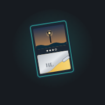

End-of-week survey
About 5 minutes. Your answers are saved on this phone as you go, so you can tap Back any time and finish later.
You've already sent this survey. Thanks! Sending it again updates your answers.

About 5 minutes. Your answers are saved on this phone as you go, so you can tap Back any time and finish later.